Overview
The Walkie & Lift Card Tracker is a mobile-friendly web app used during church services to keep track of which server has which walkie-talkie or lift card. It runs in your phone's browser — there is nothing to install.
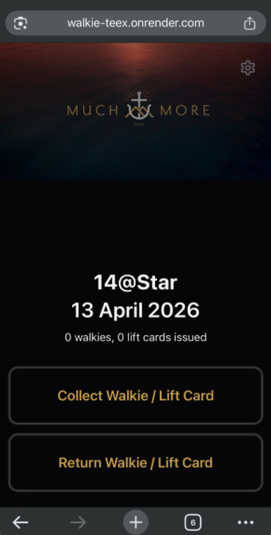
The Two Roles
Different people use the app for different purposes. Sections in this guide are colour-coded to indicate which role they apply to.
- Records who collects a walkie or lift card
- Records when equipment is returned
- Hands over to another person mid-service if needed
- Adds and manages the server list
- Adds and manages walkies and lift cards
- Publishes the team link for others to use
- Resets equipment after each service
Same person, different hats. The Coordinator and the Team's Appointed Admin may be the same person in smaller teams. That's perfectly fine — just follow the relevant sections as needed.
How to Access the App
The app is accessed through a unique URL on your phone's browser. Each team has its own URL which loads their specific server, walkie, and lift card list. Your Coordinator will share this link with you — save it to your phone's home screen or bookmarks for quick access during a service.
Bookmark your team's link. Your team's URL is unique to your team's data. Using someone else's link will load their team's servers and equipment, not yours.
Collecting Equipment
When a server needs to draw a walkie or lift card for the service, record it here. You will select their name and then tap the specific item(s) they are taking.
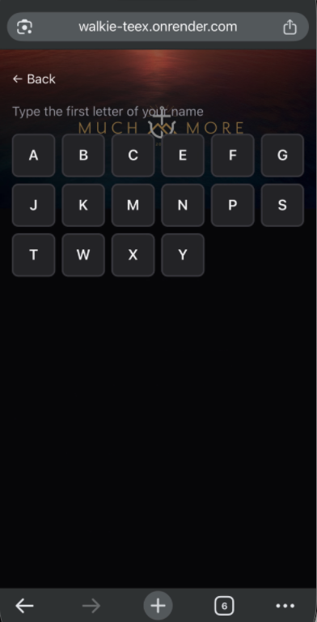
-
From the home screen, tap Collect Walkie / Lift Card.
-
Tap the first letter of the server's first name from the letter grid. Only letters that have at least one server are shown.
-
Find and tap the server's name from the list. If a server already has equipment signed out to them, a warning badge will appear next to their name — e.g. "has walkie #3". You can still proceed to issue them additional items if needed.
-
On the equipment selection screen, tap the walkie(s) the server is taking — up to 2 walkies may be selected. If they are also taking a lift card, scroll down and tap the lift card(s) as well — up to 2 lift cards may be selected. Lift cards are optional.
-
Tap Done to confirm. You will be returned to the home screen and the item count will update.
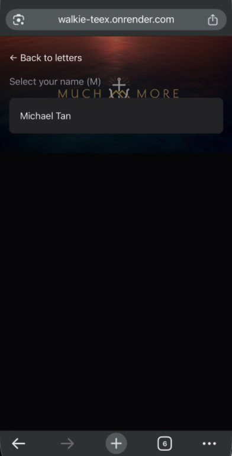
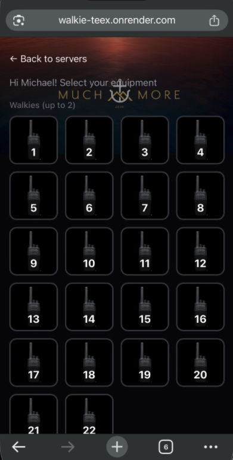
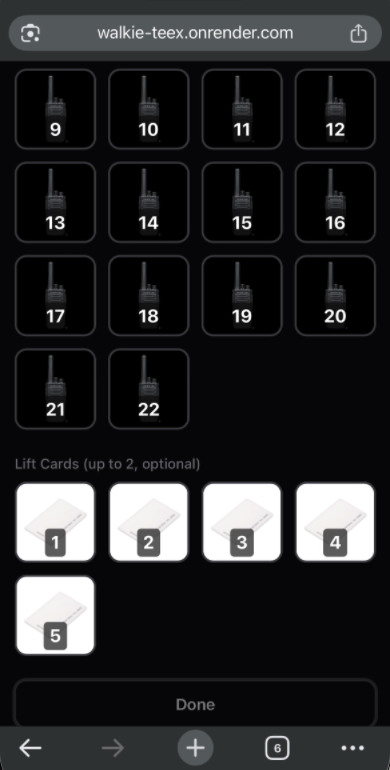
No equipment available? If no walkies or lift cards are shown, all available items are already signed out. Check the Return screen to see who currently has equipment, or ask your Coordinator to verify the item list.
Returning Equipment
When a server hands back their walkie or lift card, record it here. All currently issued items are shown as tiles — tap the tile to mark it returned.
-
From the home screen, tap Return Walkie / Lift Card.
-
The screen shows all currently signed-out items as tiles. Each tile displays the item number and the server's name who has it.
-
Tap the tile for the item being returned. The tile will immediately go dim and faded to confirm it has been marked as returned.
-
If you tapped the wrong tile by mistake, tap the dimmed tile again to undo the return and restore the item to its previous state.
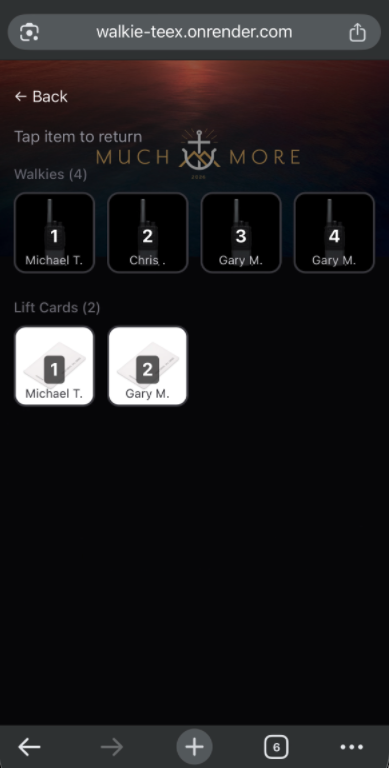
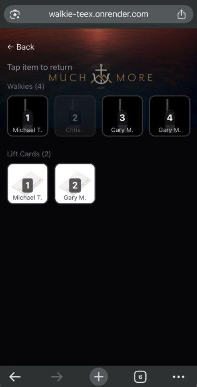
Accidental tap? Dimmed tiles can always be tapped again to undo. The return is only truly final once you leave the screen — so double-check before navigating away if you are processing several returns at once.
All returned. When no items are signed out, the screen will show a message confirming that no equipment is currently issued. This is your confirmation that everything is accounted for.
Handing Over
Mid-Service
If you need to pass responsibility to someone else while the service is still in progress, use the Data export to transfer the full live state — including who currently holds what equipment — to their device.
This requires access to the Admin area. Tap the gear icon in the top-right corner of the home screen to enter.
Step 1 — Export on Your Device
-
Go to Admin → Data tab.
-
Tap Copy to Clipboard. A success message confirms the data has been copied.
-
Paste the copied text into a WhatsApp or Telegram message and send it to the person taking over.
Step 2 — Import on Their Device
-
On the receiving phone, open your team's app URL and go to Admin → Data tab.
-
Paste the received text into the Import text box.
-
Tap Import. A summary will appear showing what will be loaded (e.g. "12 servers, 8 walkies, 4 lift cards"). Confirm to proceed.
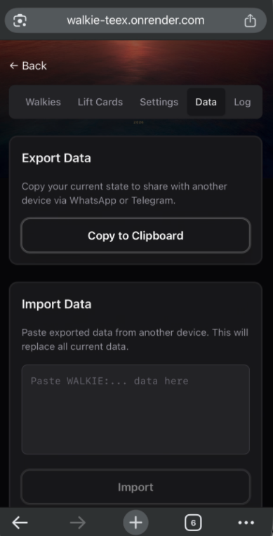
Import replaces all current data. When the receiving person imports, their current app state (servers, walkies, lift cards, and all sign-out records) will be fully replaced by the exported data. Make sure they are not actively using the app with different data before importing.
Setting Up
Your Team
Before the first service, you need to add your team's servers, walkies, and lift cards to the app. This is a one-time setup — once done, the list carries over from service to service. You only need to return here when the list changes.
Access the Admin area by tapping the gear icon in the top-right corner of the home screen. You will see tabs for Servers, Walkies, Lift Cards, Settings, Data, and Log.
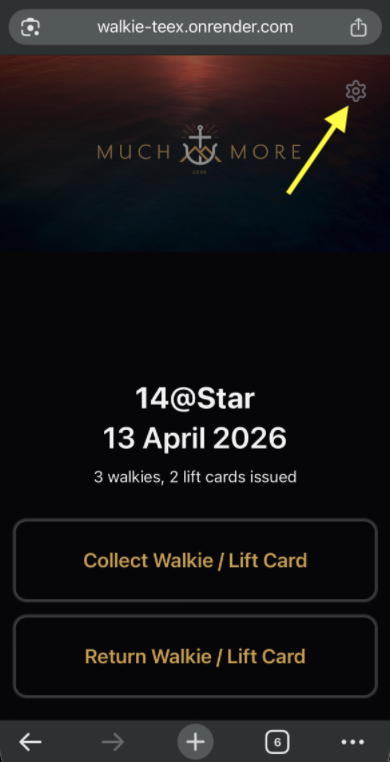
Servers
The Servers list contains all the volunteers who may need to draw a walkie or lift card during a service. Their names appear in the sign-out flow for the Team's Appointed Admin to select from.
To add a server:
Go to Admin → Servers tab.
Fill in the server's First Name (required). Last Name and Phone are optional.
Tap Add Server. The new server will appear in the list below, sorted by last name.
To edit a server:
Find the server in the list and tap Edit.
Update the details and tap Save. Or tap Cancel to discard.
To remove a server:
Find the server in the list and tap Delete. Confirm when prompted.
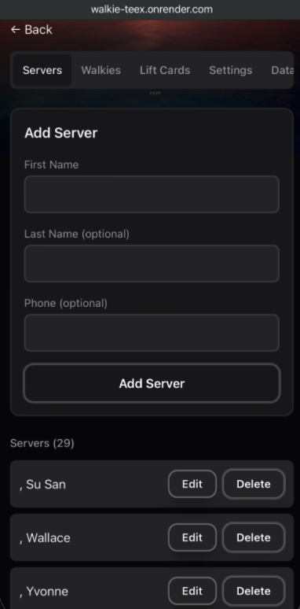
Walkies
The Walkies list defines which walkie units are available. Each walkie is identified by a number. You can temporarily disable a unit (e.g. if it is faulty) without deleting it from the list.
To add a walkie:
Go to Admin → Walkies tab.
Enter the walkie number and optionally any notes (e.g. channel setting).
Tap Add Walkie.
To disable a walkie (mark as unusable):
-
Find the walkie in the list and tap Disable. The walkie will be marked with an "unusable" badge and will no longer appear in the sign-out screen for servers to select.
To make it available again, tap Enable next to the same walkie.
To edit or delete a walkie:
Use the Edit button to update the number or notes, then tap Save.
Use the Delete button to permanently remove the walkie from the list.
Disable vs Delete. Use Disable for temporary issues (flat battery, in repair). Use Delete only if the walkie is no longer part of your team's inventory. A disabled walkie remains on the list and can be re-enabled at any time.
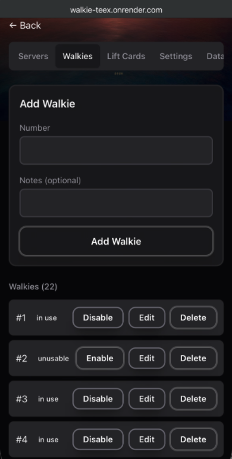
Lift Cards
Lift cards are managed the same way as walkies. Each card has a number, an optional notes field, and can be disabled without being permanently deleted.
To add a lift card:
Go to Admin → Lift Cards tab.
Enter the card number and any optional notes.
Tap Add Lift Card.
To edit, disable, or delete a lift card, follow the same steps described for Walkies above.
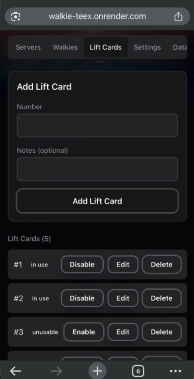
Event Name
& Theme
Personalise the app for your team by setting the event name shown on the home screen and choosing a colour theme. Both are found in the Settings tab of the Admin area.
Go to Admin → Settings tab.
Changing the Event Name
The event name appears prominently on the home screen above the date. Set it to something that identifies your team or service session — for example your team name, service time, or venue.
-
In the Event Settings card, tap the event name field and clear the existing text.
-
Type the new event name.
-
Tap Update Event Name to save. The home screen will reflect the change immediately.
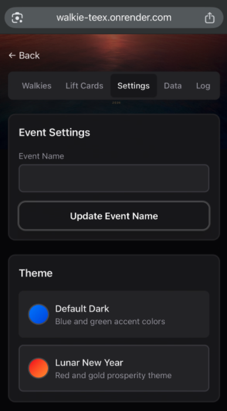
Changing the Theme
Two themes are available. The theme changes the background image and accent colours across the entire app for all users on your team's link.
-
Scroll down to the Theme card in the Settings tab.
-
Tap your preferred theme to select it:
Blue and green accent colours. Suitable for all services year-round.
Red and gold prosperity theme. Designed for Lunar New Year services.
-
The selected theme is applied instantly — no need to save or refresh.
Theme affects all users. Because the theme is stored with your team's data, everyone who opens your team's link will see the same theme. Switch it back to Default Dark after a special service if needed.
Publishing &
Sharing Your Team
After setting up your server, walkie, and lift card lists, publish the data to generate your team's unique link. This link is what your Team's Appointed Admin (and any other relevant personnel) will use to open the app with your team's data pre-loaded.
Publishing Your Team Info
Go to Admin → Settings tab.
Scroll down to the Publish Team Info card and tap Publish Team Info.
-
A unique link will appear below the button. This link is specific to your team's data. Tap Copy to copy it to your clipboard.
-
Share the link with your Team's Appointed Admin via WhatsApp, Telegram, or any messaging app. They should save it as a bookmark on their phone.
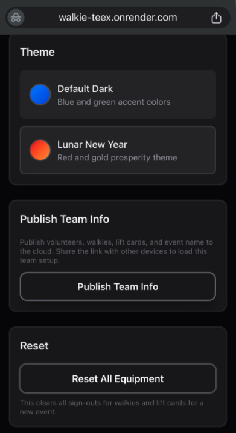
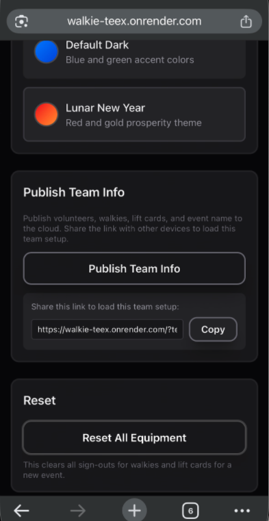
How Your Team Opens the App
When your Team's Appointed Admin opens the shared link, the app loads automatically with your team's servers, walkies, and lift cards. They do not need to do any setup.
Re-publish whenever the list changes. If you add a new server, walkie, or lift card, you need to publish again and share the updated link. The existing link will be replaced with a new one reflecting the latest data.
Publish ≠ live sync. Publishing shares your team's setup (who's on the list, what equipment exists). It does not share live sign-out activity during a service. For that, see Section 04 — Handing Over.
Resetting After
a Service
Once all equipment has been returned at the end of a service, reset the app so it is clean and ready for the next service. This clears all current sign-out records.
Go to the Admin area (gear icon) and then navigate to the Settings tab.
-
Before resetting, confirm on the Return screen that all equipment has been returned — the screen should show no items signed out.
Go to Admin → Settings and scroll down to the Reset card.
Tap Reset All Equipment and confirm when prompted.
What gets cleared. Reset clears all sign-out records for walkies and lift cards — every item is marked as available again. The server list, walkie list, and lift card list are not affected — they carry over to the next service.
Activity Log
The Activity Log records every sign-out and return during the service with a timestamp and the server's name. Use it to investigate any discrepancies or to confirm that all equipment was properly returned.
Go to Admin → Log tab.
Each log entry shows:
- → Action type — "Collected" (green) or "Returned" (red)
- → Item — whether it was a Walkie or Lift Card, and its number
- → Server name — who collected or returned it
- → Timestamp — the date and time of the action
To clear the log:
On the Log tab, tap Clear Log in the top-right corner.
Confirm when prompted. The log will be permanently cleared.
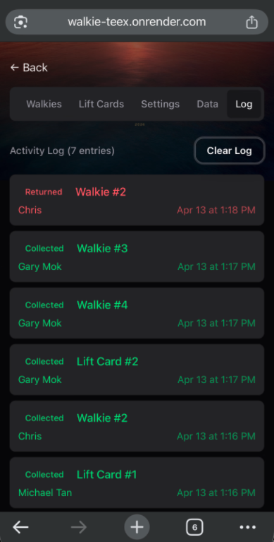
Clear after each service. Consider clearing the log after the Reset step at the end of each service, so the log only ever reflects the most recent session's activity. This makes it easier to investigate any issues.
Quick Reference
| Task | Who | Where to go |
|---|---|---|
| Record a server collecting equipment | Appointed Admin | Home → Collect Walkie / Lift Card |
| Record equipment being returned | Appointed Admin | Home → Return Walkie / Lift Card |
| Hand over to another device mid-service | Appointed Admin | Admin → Data → Copy / Import |
| Change the event name | Coordinator | Admin → Settings → Event Settings |
| Change the app theme | Coordinator | Admin → Settings → Theme |
| Add or edit servers | Coordinator | Admin → Servers |
| Add, edit, or disable walkies | Coordinator | Admin → Walkies |
| Add, edit, or disable lift cards | Coordinator | Admin → Lift Cards |
| Share the team setup with another device | Coordinator | Admin → Settings → Publish Team Info |
| Reset all sign-outs after a service | Appointed Admin | Admin → Settings → Reset All Equipment |
| Review who collected or returned what | Appointed Admin | Admin → Log |
Equipment Limits
These limits apply per sign-out transaction. A server can only be issued up to these quantities in a single collection.